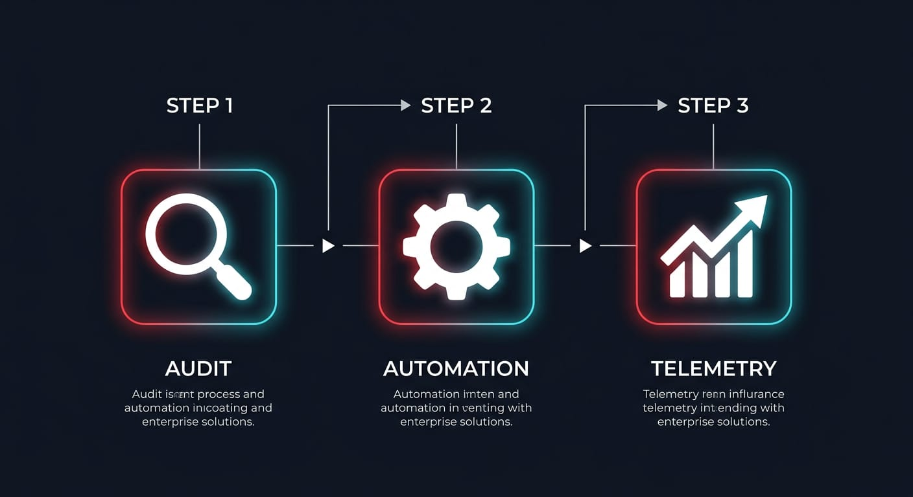

Automation that scales.
We bridge the gap between fragmented data and high-velocity business operations. Redmatic engineers industrial-grade automation stacks that turn your manual bottlenecks into automated assets.

We bridge the gap between fragmented data and high-velocity business operations. Redmatic engineers industrial-grade automation stacks that turn your manual bottlenecks into automated assets.

We perform a deep-dive forensic audit of your digital presence. Sentiment mapping, competitor gap analysis, and conversion leak identification.
Architecture and deployment of custom workflows. CRM, billing, and communication suites synchronized into a single, high-output data stream.
Proactive system health monitoring. If an automated workflow stalls or an API connection breaks, we are pinged in real-time, ensuring 99.9% uptime.